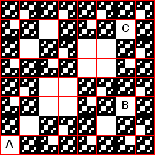

| 3(a) The only forbidden pairs are 14 and 41. The square B has addess 241, so must be empty as a consequence of the empty address 41. The square C has address 441, so must be empty as a consequence of the empty address 41. The square A has address 111. It is not empty as a consequence of the forbidden pairs, so if it empty, the IFS is not determined by forbidden pairs. |
|  |
Return to Homework 3 Practice.